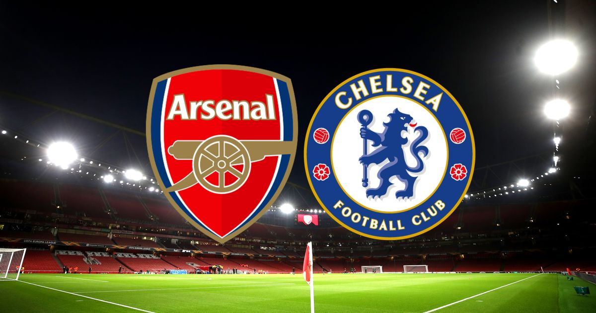
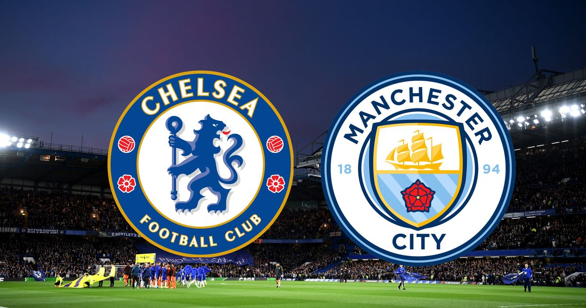
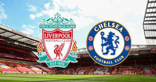

<!DOCTYPE html>
<html lang="en">
<head>
  <meta charset="UTF-8">
  <meta http-equiv="X-UA-Compatible" content="IE=edge">
  <meta name="viewport" content="width=device-width, initial-scale=1.0">
  <link rel="stylesheet" href="css/style.css">
  <title>Sport</title>
</head>
<body>
  
</body>
</html>
<body>

<header>
<!--  <nav>-->
<!--      <ul class="nav_links">-->
<!--          <li><a href="index.html">HOME</a></li>-->
<!--          <li><a href="matches.html">MATCHES</a>-->
<!--            <ul>-->
<!--              <li><a href="current.html">Current matches</a></li>-->
<!--              <li><a href="future.html">Future matches</a></li>-->
<!--              <li><a href="past.html">Results of past matches</a></li>-->
<!--            </ul> -->
<!--          </li>-->
<!--          <li><a href="news.html">NEWS</a></li>-->
<!--          <li><a href="fans.html">FANS</a></li>-->
<!--          <li><a href="contacts.html">CONTACTS</a></li>-->
<!--          <li><a href="trophies.html">TROPHIES</a></li>-->
<!--          <a class="admin" href="admin.html"><button>ADMIN</button></a>-->
<!--      </ul>-->
<!--  </nav> -->
  <!-- <nav role="navigation">
    <ul>
      <li><a href="#">One</a></li>
      <li><a href="#">Two</a>
        <ul class="dropdown">
          <li><a href="#">Sub-1</a></li>
          <li><a href="#">Sub-2</a></li>
          <li><a href="#">Sub-3</a></li>
        </ul>
      </li>
      <li><a href="#">Three</a></li>
    </ul>
  </nav>
   -->

    <ul id="nav">
        <li><a href="index.html">HOME</a></li>
        <li><a href="matches.html">MATCHES</a>
            <ul>
                <li><a href="current.html">Current matches</a></li>
                <li><a href="future.html">Future matches</a></li>
            </ul>
        </li>
        <li><a href="news.html">NEWS</a></li>
        <li><a href="fans.html">FANS</a></li>
        <li><a href="contacts.html">CONTACTS</a></li>
        <li><a href="trophies.html">TROPHIES</a></li>
        <li><a href="admin.html">Admin</a></li>

<!--        <li><a href="#">Home</a></li>-->
<!--        <li><a href="#">Services</a>-->
<!--            <ul>-->
<!--                <li><a href="#">Services-1</a></li>-->
<!--                <li><a href="#">Services-2</a></li>-->
<!--                <li><a href="#">SUB Services »</a>-->
<!--                    <ul>-->
<!--                        <li><a href="#">Sub Services 1</a>-->
<!--                        <li><a href="#">Sub Services 2</a>-->
<!--                    </ul>-->
<!--                </li>-->
<!--            </ul>-->
<!--        </li>-->
<!--        <li><a href="#">About</a></li>-->
    </ul>


<div class="logo">
      

  </div>
</header>

<main>
  <div class="photo" >


    <h1>CHELSEA - Football club</h1>

  </div>
</main>
<section>
  <div class="history">
<h1> HISTORY</h1>
<p>In the first few years of this new decade three trophies were added to the cabinet by José Mourinho's Real Madrid. The most notable was the 2011-12 Liga title, which they won with a record-breaking 100 points, the highest score achieved in the history of the championship at that stage, and 121 goals. They also beat Barcelona to clinch a Copa del Rey and a Supercopa de España.

  In June 2013, Carlo Ancelotti arrived at Real Madrid. The Italian won four trophies with the Whites, the first coming in the shape of Real Madrid's nineteenth Copa del Rey, after beating Barcelona 1-2 in the final. On 24 May 2014, Madrid lifted the European Cup once again, claiming La Décima with a 4-1 victory over Atlético in Lisbon. Goals from Ramos, Bale, Marcelo and Cristiano secured the triumph.

  Two further triumphs arrived in the second season under Ancelotti: The European Super Cup, against Sevilla and Real Madrid’s first World Club Cup, against San Lorenzo. This meant Real Madrid capped of a historic year in their history in 2014, making it the year in which most trophies were won by the club. In June 2015, Rafa Benítez returned to the club where he cut his teeth, to take charge of the Whites. Then, in January 2016, Zidane made the step up to first team coach, following his legendary career as a player. His first season ended with the team lifting the La Undécima trophy, against Atlético in Milán.</p>
  </div>
</section>
<section>
  <div class="wins">
    <h1>MAJOR VICTORIES</h1>
    <div class="wins_list">

    </div>
    <div class="wins_list">

    </div>
    <div class="wins_list">

    </div>
  </div>
</section>

<section>
<div class="business-model">
    <h1>MAJOR VICTORIES</h1>
    <div class="business-model-block">
            <span class="business-model-list">
               
               <h3>Chelsea vs Arsenal</h3>
               <h4>3 to 1</h4>
            </span>
        <span class="business-model-list">
               
               <h3>Chelsea vs Man City</h3>
               <h4>2 to 1</h4>
            </span>
        <span class="business-model-list">
               
               <h3>Chelsea vs Liverpool</h3>
               <h4>1 to 1</h4>
            </span>
    </div>
</section>

<footer>
  <div class="footer">
    <h2>This is my footer</h2>
  </div>
</footer>


</body>
</html>

  <!--<div class="container-header">
    
    <nav class="nav-header">
       <ul>
         <li><a href="#"><i class="nav-header"></i>Main</a></li>
         <li><a href="#"><i class="nav-header"></i>Matches</a>
           <ul>
             <li><a href="#">Current matches</a></li>
             <li><a href="#">Future matches</a></li>
             <li><a href="#">Results of past matches</a></li>
           </ul>
         </li>
         <li><a href="#"><i class="nav-header"></i>News</a></li>
         <li><a href="#"><i class="nav-header"></i>Fans</a></li>
         <li><a href="#"><i class="nav-header"></i>Contacts</a></li>
         <li><a href="#"><i class="nav-header"></i>Admin</a></li>
       </ul>
    </nav> -->